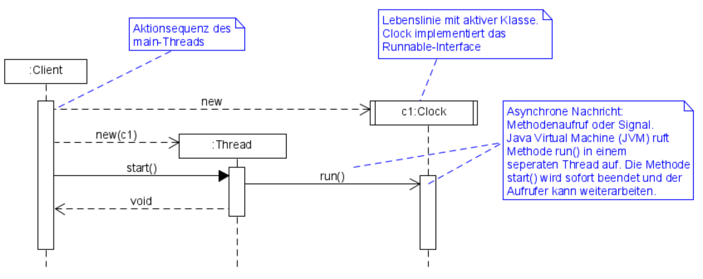
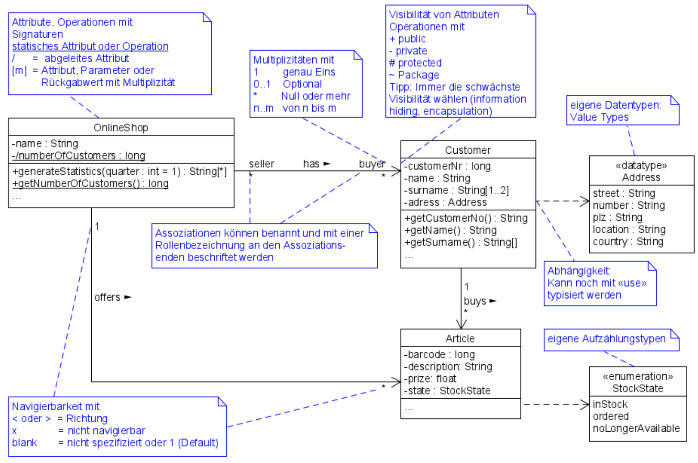

1. Software Engineering
Software Engineering beschäftigt sich mit der Herstellung oder Entwicklung von Software, der Organisation und Modellierung der zugehörigen Datenstrukturen und dem Betrieb von Softwaresystemen
Kernprozesse |
Unterstützungsprozesse |
|
|
1.1. Iterativ-inkrementell Entwicklungsprozess

Software wird in mehreren geplanten und kontrolliert durchgeführten Iterationsschritten stückweise (inkrementell) entwickelt.
Ziel und Gelände sind am Anfang unklar: Lenkwaffe.
| Vorteile | Nachteile |
|---|---|
|
|
| Definierte Prozesskontrolle |
für einfache und völlig planbare Problemstellungen |
| Empirische Prozesskontrolle (Agil) |
für komplexe, chaotische Problemstellungen (unbekannt, stetig ändernd) |
1.2. Modelle
Modelle helfen ein Gebilde zu verstehen und kommunizieren. Es hilft as Gebilde zu gestalten, bewerten und kritisieren
1.3. UML
| Sketch |
informelle und unvollständige Diagramme (von Hand) |
| Blueprint |
detaillierte Analyse- und Design-Diagramme für Code |
| Programming-Laguage |
Komplete, ausführbare Spezifikationeines Software-Systems in UML |
2. Anforderungsanalyse
-
Usability
-
Deutsch: Gebrauchstauglichkeit
-
-
User Experience
-
= Usability + Desirability
-
-
Customer Experience
-
= Usability + Desirability + Brand experience
-
2.1. Usability Engineering
Ziel: Software entwickeln, welche 3 Anforderungen erfüllt
| Effektivität | Effizienz | Zufriedenheit |
|---|---|---|
Alle Aufgaben können vollständig erfüllt werden |
Die Aufgabe kann mit angemessenem Aufwand erledigen werden (Mental, Physisch, Zeit) |
Mit dem System/Interaktion ist der Benutzer erfreut |
2.2. Usability Anforderungen
Anforderungsbereiche bezüglich Usabilty
-
Aufgabenangemessenheit
-
Lernförderlichkeit
-
Individualisierbarkeit
-
Erwartungskonformität
-
Selbstbeschreibungsfähigkeit
-
Steuerbarkeit
-
Fehlertoleranz
2.3. User-Centered Design (UCD)

2.3.1. User & Domain Research
Wer sind die User? Was sind ihre Ziele/Kontext? Wie?
| Contextual Inquiry |
Experte beobachtet User bei seinem Job |
| Contextual Interview |
|
User-Centered Design Process Artefakte:

| Personas |
Fiktive Person, represäntiert bestimmte Benutzergruppe |
| Usage-Szenarien |
Beschreiben die aktuelle Situation |
| Kontext-Szenarien |
Beschreiben die zukünftige Situation |
| Blueprint |
Geschäftsprozessmodell |
| Storyboard |
Comic mit Schlüsselszenen, 6-8 Bilder mit 1-2 Sätzen |
| Interaktionskonzepte |
Beschreibt die Interkation mit dem Benutzer |
| Wireframes |
UI-Prototypen des Interaktionskonzept |

Fokusgruppen, Umfragen, Nutzungsauswertung, Desktop Research
2.3.2. Requirements Analysis
-
Wann, wie und warum interagiert der Benutzer mit dem System
-
Was sind die wichtigsten Anforderungen an die Interaktion und das System an Benutzersicht
2.3.3. Design & Prototype
-
Entwicklung des Interaktionskonzepts
-
Umsetzung des Konzepts mit Interaktionsprototypen
2.3.4. Evaluate
-
Test des Interaktionskonzepts mit Benutzern & Fachexperten
-
Basierend auf den Interaktionsprototypen
2.4. Geschäftsprozessmodell
2.5. Funktionale Anforderungen (mit Use-Cases)
2.6. Use-Cases
| Ausprägungen | Tests |
|---|---|
|
|
| Brief Use-Case | Casual Use-Case | Fully-dressed Use-Case |
|---|---|---|
|
|
|
| "Kassier erfasst das Produkt. System bestätigt Produkt." anstatt "Kassier tippt die Produkt-ID ein. System zeigt Produktnamen." |
2.6.1. Use-Case-Diagram
|
|
2.7. FURPS+
|
|
2.8. Systemsequenzdiagram (SSD)
Formal ein UML Sequenzdiagram. Interaktionen der Akteure mit dem System
|
|
|
2.8.1. Systemoperationen
|
|
2.8.2. Operation Contract
|
|
3. Domänenmodellierung
3.1. Domänenmodell
| UML Klassendiagram | Aggregation | Komposition |
|---|---|---|
|
|
|
Tipp
|
|
Generalisierung
|
Zustand
|
Rollen
|
Assozations Klasse
|
4. Softwarearchitektur und Design
4.1. Architekturpattern
4.2. Paketdiagram

4.3. Sequenzdiagram
 |
4.4. Klassendiagram

4.5. Kommunikationsdiagram
4.6. Zustandsdiagram
4.7. Aktivitätsdiagram

4.8. GRASP
GRASP (General Responsibility Assignment Software Patterns) bezeichnet eine Menge von grundlegenden Prinzipen bzw. Pattern, mit denen die Zuständigkeit bestimmter Klassen objektorientierter Systeme festgelegt wird.
4.8.1. Information Expert
| Problem |
Gibt es ein grundlegendes Prinzip, um Objekten Verantwortlichkeiten zuzuweisen? |
| Lösung |
Weisen Sie die Verantwortlichkeit einer Klasse zu, die über die erforderlichen Informationen verfügt, um sie zu erfüllen. |
| Alternativen |
Low Coupling oder High Cohesion erfordern andere Lösung, nämlich eine «künstliche» Klasse. |
|

4.8.2. Creator
| Problem |
Wer soll dafür Verantwortlich sein, eine neue Instanz (Objekt) einer Klasse zu erzeugen? |
| Lösung |
Weisen Sie einer Klasse A die Verantwortlichkeit zu, eine Instanz der Klasse B zu erstellen, wenn eine der folgenden Aussagen wahr ist (je mehr desto besser):
|
| Alternativen |
Factory Pattern, Dependency Injection (DI) |
4.8.3. Controller
| Problem |
Welches erste Objekt jenseits der UI-Schicht empfängt und koordiniert («kontrolliert») eine Systemoperation? |
| Lösung |
Weisen Sie Verantwortlichkeit einer Klasse zu, die eine der folgenden Bedingungen erfüllt:
|
| Wichtig |
Controller macht selber nur wenig und delegiert fast alles! |
| Fassaden Controller | Use-Case-Controller |
|---|---|
Wenn ein Fassaden Controller eine zu geringe Kohäsion aufweist und zu gross wird (LOC), ist ein Use Case Controller zu präferieren!
4.8.4. Low Coupling
| Problem |
Wie erreicht man eine geringe Abhängigkeit, wie begrenzt man die Auswirkungen von Änderungen und wie verbessert man die Wiederverwendbarkeit?
|
| Lösung |
Weisen Sie Verantwortlichkeiten so zu, dass die Kopplung gering bleibt. Bewerten Sie anhand dieses Prinzips mögliche Alternativen (vgl. das I in SOLID [3]). |
4.8.5. High Coheson
| Problem |
Wie kann erreicht werden, dass Objekte fokussiert, verständlich und handhabbar bleiben und nebenbei Low Coupling unterstützen?
|
| Lösung |
Weisen Sie Verantwortlichkeiten so zu, dass die Kohäsion hoch bleibt. Verwenden Sie dieses Kriterium, um alternativen zu bewerten. |
4.8.6. Polymorphism / Vererbung
| Problem |
Wie werden typabhängige Alternativen gehandhabt?
|
| Lösung |
Weisen Sie das Verhalten mit polymorphen Operationen der Klasse zu, dessen Verhalten variiert.
|
4.8.7. Pure Fabrication
| Problem |
Welches Objekt sollte die Verantwortlichkeit haben, wenn Sie nicht gegen High Cohesionund Low Couplin goder andere Ziele verstossen wollen, aber die Lösungen, die beispielsweise vom Information Expert vorgeschlagen werden, nicht passen?
|
| Lösung |
Weisen Sie einen hoch kohäsiven Satz von Verantwortlichkeiten einer künstlichen Hilfsklasse zu, die nicht ein Konzept des Problembereichs repräsentiert, sondern einfach erstellt wird, um eine hohe Kohäsion, eine geringe Kopplung oder eine bessere Wiederverwendbarkeit zu realisieren. |
4.8.8. Indirection
| Problem |
Wie soll ein Verantwortlichkeit zugewiesen werden, um eine direkte Kopplung zwischen zwei (oder mehr) Objekten zu vermeiden? Wie können Objekte entkoppelt werden, so dass die Kopplung geringer und das Wiederverwendungspotential grösser wird? |
| Lösung |
Weisen Sie die Verantwortlichkeit einem zwischengeschalteten Objekt zu, das zwischen den anderen Komponenten oder Diensten vermittelt, so dass diese nicht direkt gekoppelt sind (vgl. das D in SOLID [3]).
|
| Alternativen |
Protected Variations |
4.8.9. Protected Variations
| Problem |
Wie sollen Objekte, Subsysteme und Systeme entworfen werden, sodass Veränderungen und Instabilitäten in diesen Elementen keinen Einfluss auf andere Elemente haben? |
| Lösung |
Identifizieren Sie die Punkte, and denen Veränderungen und Instabilitäten zu erwarten sind; weisen Sie Verantwortlichkeiten so zu, dass diese Punkte durch ein stabiles Interface eingekapselt werden (vgl. das O und D in SOLID [3]). * Dies ist ein sehr wichtiges, grundlegendes Prinzip des Softwaredesigns!
|